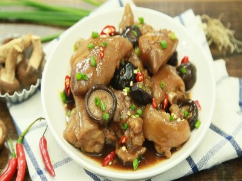

|  |
Food's name: Stewed pork leg with shiitake mushroom▸ Ingredients:
▸ Time to prepare: 1 hour 15 minutes ▸ Approx quantity: 1 large plate |
▸ Detailed recipe:
Step 1: Preliminary processing of pork leg:
- When you buy pork leg, you use a razor to clean the hair, then rub it with salt to remove the odor, then wash it with clean water. After washing, use a knife to cut the
pork leg into bite-sized pieces.
- Then blanch in boiling water for about 1 minute to remove dirt and odors. Then take it out and put it in a bowl of ice water for about 2 minutes, then take it out and
wash it with clean water and let it dry.
Step 2: Preparation of shiitake mushrooms:
- Buy fresh shiitake mushrooms and soak them in warm water for 1-2 minutes to remove all the sand and sawdust. Then cut off the base of the mushroom.
- You can also wash shiitake mushrooms with rice water to remove the pungent smell of the mushrooms and help the mushrooms retain their inherent natural flavor.
Step 3: Pork leg stew:
- Put the pot on the stove, put in 1 tbsp of cooking oil, then add 10g of red onion and saute.
- When the purple onion has smelled, continue to add the pork leg and stir-fry until the pork leg is hunted again.
- Continue to add 500ml of water to the pot and then turn the heat to medium to stew pork legs. Use a patch to remove the foam so that the water is clear.
- Put in the pot in turn: 1/2 tbsp seasoning, 1 tbsp sugar, 3 tbsp soy sauce, 1 tbsp oyster sauce, 1/2 tbsp salt, stir well to dissolve the seasoning.
- After stirring, cover the pot and simmer for 40 minutes to soften the pork legs. After 40 minutes, continue to add the shiitake mushrooms, cover, and simmer for
another 20 minutes until the broth thickens.
Step 4: Finished products:
- When eating, remove the pork leg on a plate, sprinkle some scallions, and finely chopped chili to increase the flavor of the dish!
- The pork leg stewed with shiitake mushroom is delicious, rich in flavor, the pork leg meat with delicious skin, not friable, and the fatty part of the pork belly combined
with the chewy shiitake mushroom and eaten with a cup of white rice is perfect!
▸ Calories and related information: